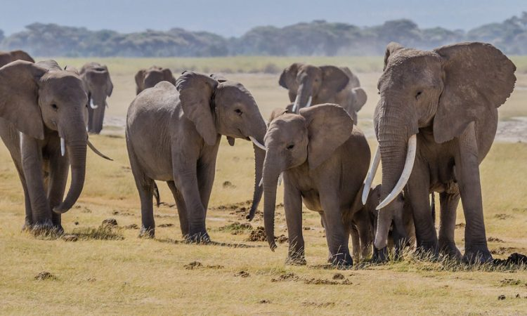
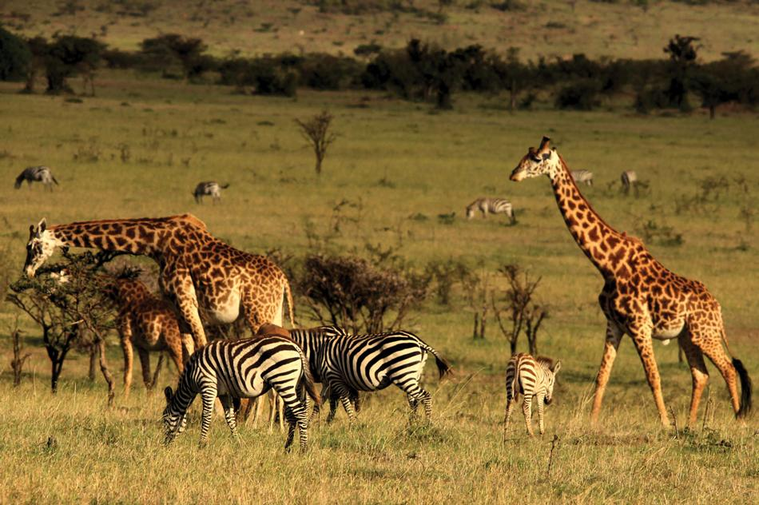
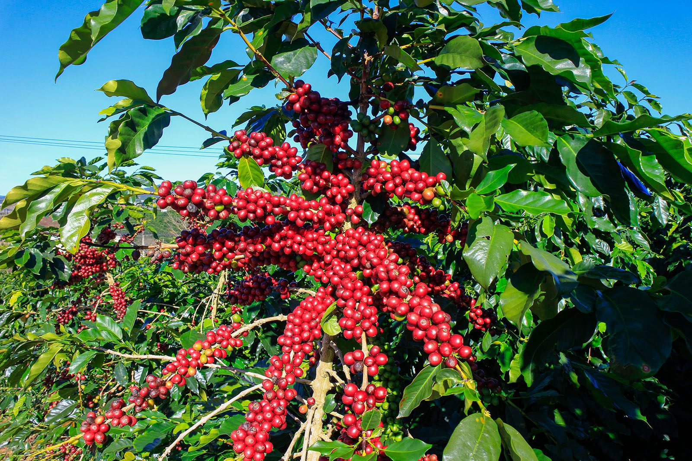
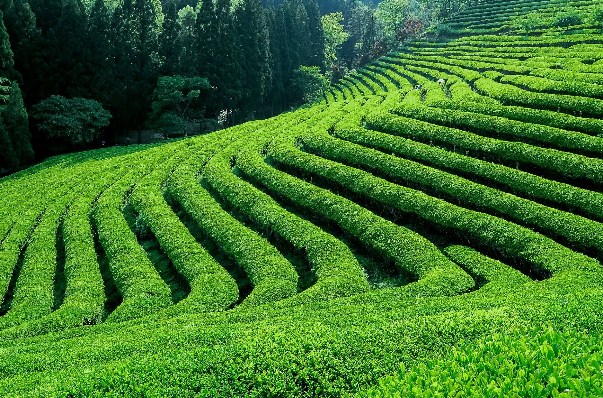
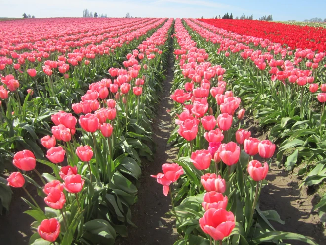
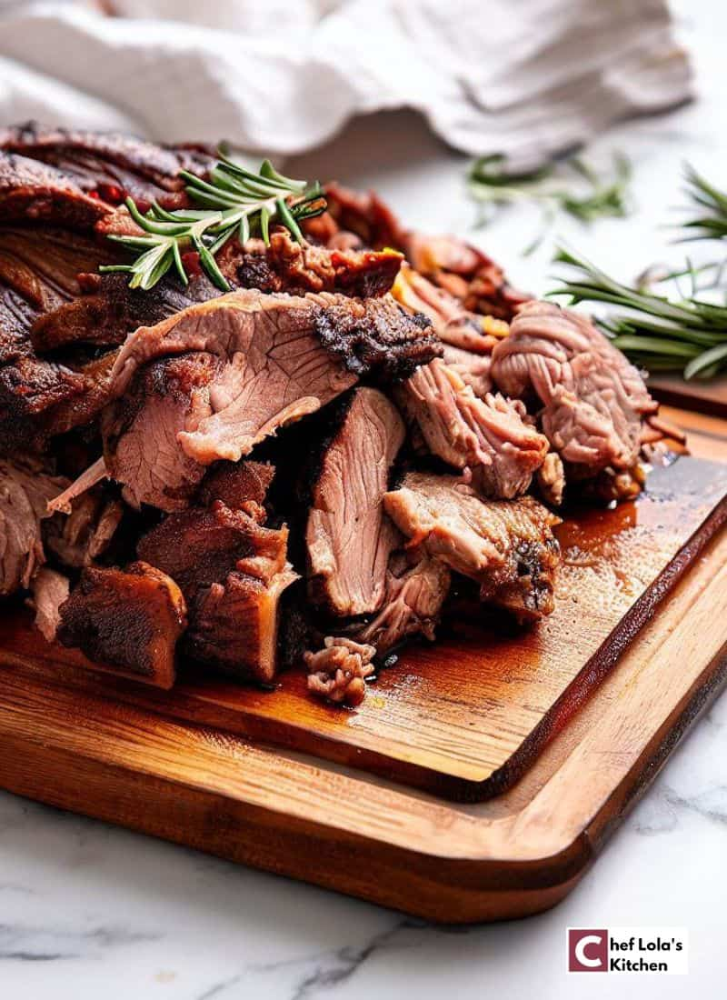
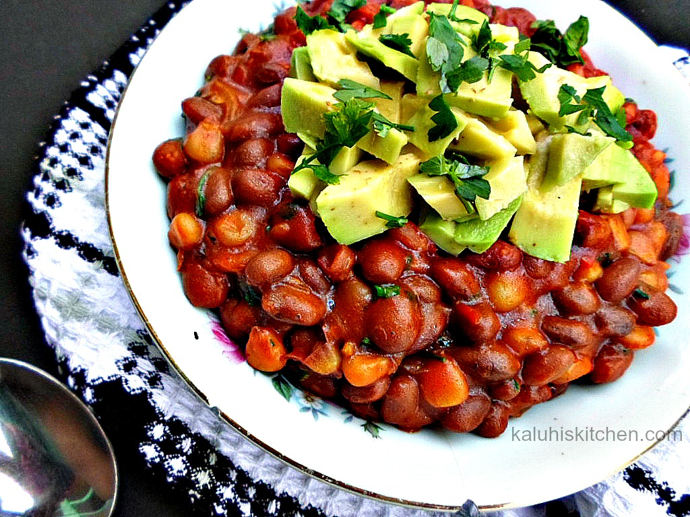
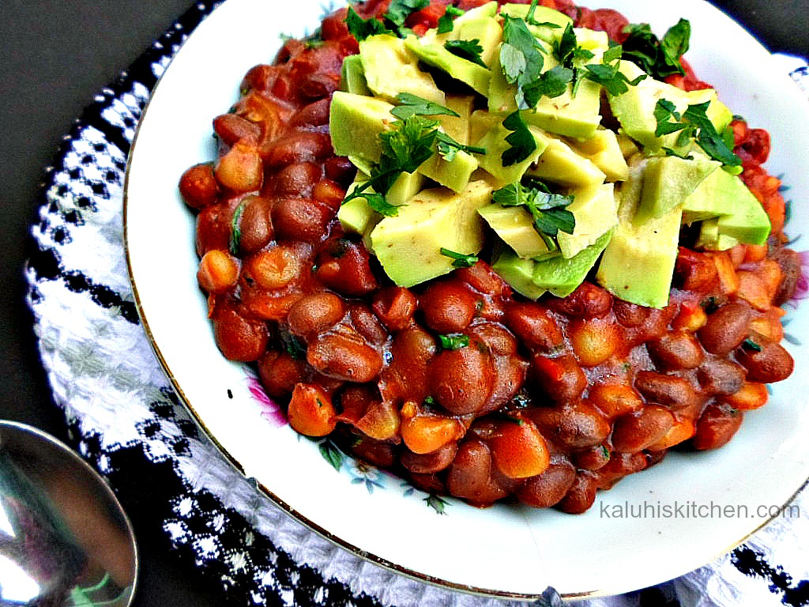
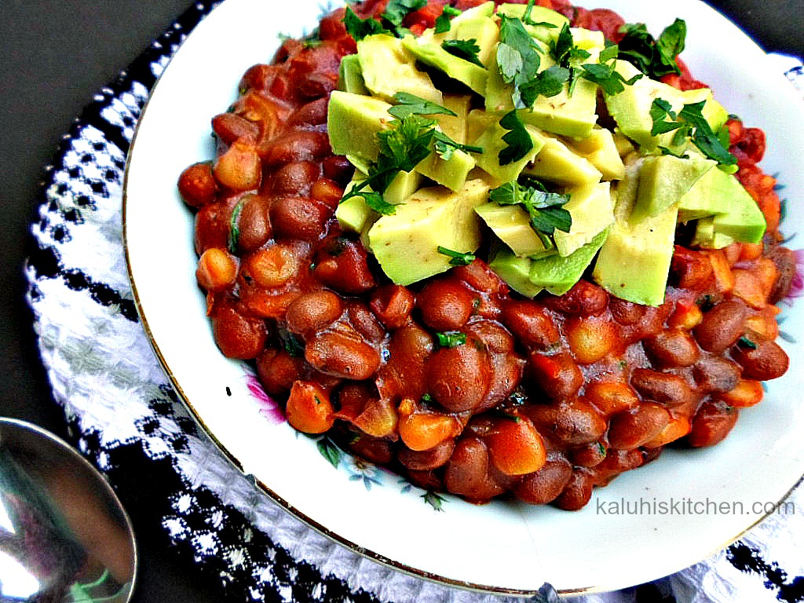

Wildlife and Safari Tourism
 Kenya has some of the most diverse and abundant wildlife populations in Africa, making it a top destination for safari tourism
Agro-Tourism
  Agro-tourism is an emerging attraction in Kenya, offering visitors a unique opportunity to explore the country’s agricultural heritage and learning about sustainable farming practices.
Authentic Cuisines

 


Kenyan cuisine is a delightful fusion of African, Indian, and Arab influences. With its bold flavors, aromatic spices, and fresh ingredients, Kenyan food is a celebration of the country's rich heritage and natural abundance.